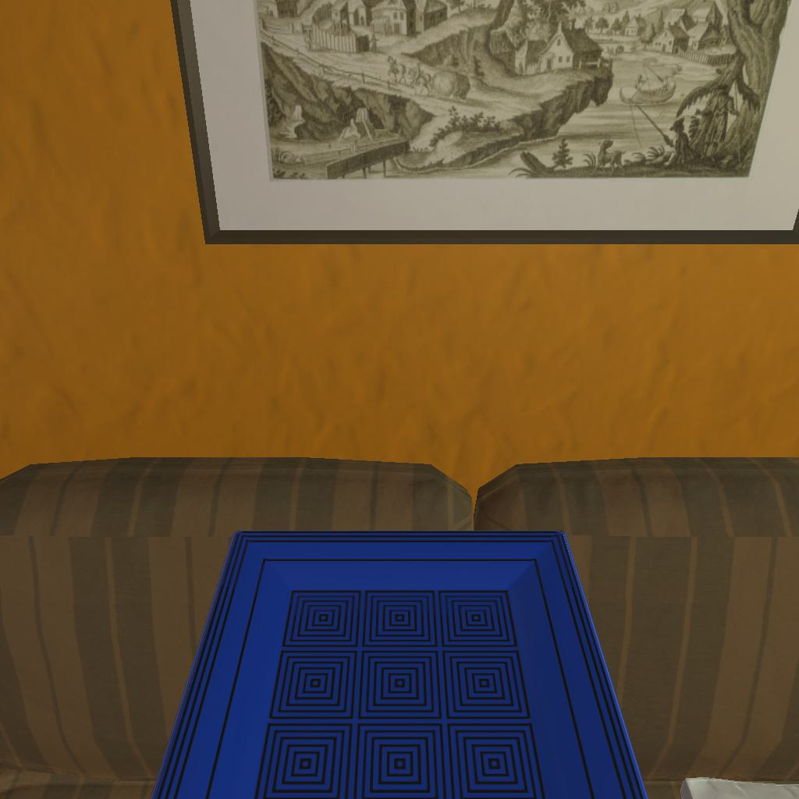

---------------------------------------------------------task: 3---------------------------------------------------------
--------------------------------------------------------------------------------------------------------------------------------------------------------------------
--------------------------------------------------------------------------------------------------------------------------------------------------------------------
Step:--------------------------------------------------------------------------14-------------------------------------------------------------------------------
----------------------------------------
VLM Prompt:
Image1:
Image2:
**Instruction**
1. Analyze the provided images to identify all visible household objects and compare the difference between images (e.h. whether the object is opened or not and taken on hand or not), focusing on those relevant to the task description "examine the plate with the floorlamp."
2. Use the analysis of images and the task hint "The agent must find an object of the desired type, locate and turn on a light source with the desired object in-hand." to answer the question: what is the most reasonable action in the choices for the task description "examine the plate with the floorlamp"?
3. Decide and write the answer using the template: The answer is: (i): , where i is the real number. If there is no desired object in images, search every place based on **Initial Observation** to find the object. And if no one is exactly correct, choose a similar answer.
**Initial Observation**
You are in the middle of a room. Looking quickly around you, you can see armchair (1), garbagecan (1), tvstand (1), shelf (1-5), sofa (1), coffeetable (1), sidetable (1-2), drawer (1)
**Answer Choices**
(1): go to armchair 1
(2): go to garbagecan 1
(3): go to tvstand 1
(4): go to shelf 1
(5): go to shelf 2
(6): go to sofa 1
(7): go to coffeetable 1
(8): go to sidetable 1
(9): go to sidetable 2
(10): go to drawer 1
(11): go to shelf 3
(12): go to shelf 4
(13): go to shelf 5
(14): put plate 2 in/on sofa 1
**Answer**
Let's think step by step by following the instructions.
----------------------------------------
----------------------------------------
Original Response:
Firstly, analyzing the images, we can see a plate with a blue pattern on it. The plate is not opened or held in hand; it is placed on a surface. There is no visible floorlamp in the images. Since the task is to examine the plate with the floorlamp, the agent must first find the plate and then locate a light source, which is the floorlamp.
None of the answer choices explicitly mention picking up the plate or turning on a floorlamp, but we can make a logical deduction based on the task hint and initial observation. The agent must first find the plate, which is visible in the images, and then locate a floorlamp to examine the plate under the light.
Since the images do not provide information about the location of the floorlamp, the agent must search the room based on the initial observation. Of the options given, going to a shelf or a sidetable might be the most reasonable actions, as these are common places where a plate could be taken from or placed on, and a floorlamp might be located near these furniture items.
Based on the initial observation, shelves and sidetables are mentioned, and since the plate is already in view, the next reasonable action would be to go to a location where the floorlamp is likely to be found to examine the plate.
The answer is: (8): go to sidetable 1. This choice is made with the assumption that a floorlamp may be located next to a sidetable, and the agent can then examine the plate with the floorlamp. If the floorlamp is not there, the agent can continue to search other locations like the shelves or the other sidetable.
----------------------------------------
----------------------------------------
>>> Refine Original VLM Response and Get Pure Action: go to sidetable 1
----------------------------------------
-----------------------------------------------------------------
Running time: 59.01002550125122 seconds
Total Money: 1.0415000000000003
-----------------------------------------------------------------
-----------------------------------------------------------------
Text Observation:You arrive at loc 7. On the sidetable 1, you see a floorlamp 1, a pillow 1, a laptop 1, a vase 1, a statue 1, a plate 1, a statue 2, a cellphone 1, a remotecontrol 1, a keychain 1, and a newspaper 1.
-----------------------------------------------------------------
UNSUCCEED